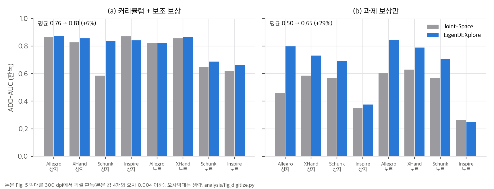
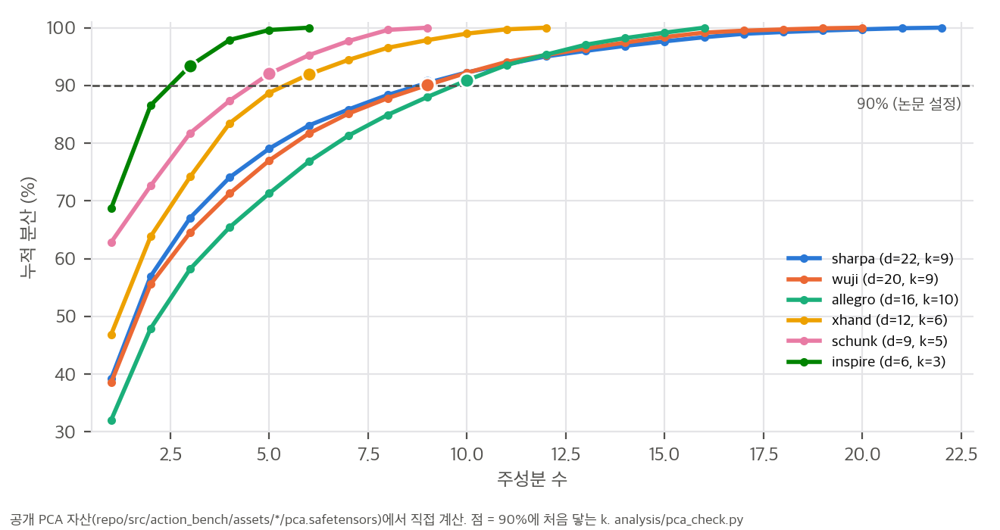
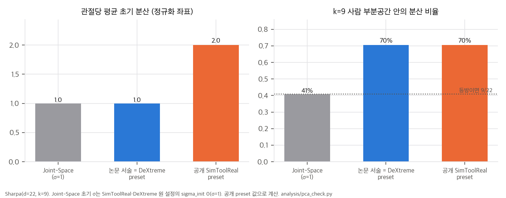
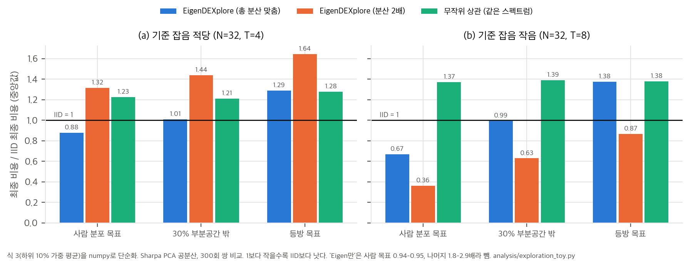

LowRankMultivariateNormal로 이를 정확히 구현한다.5d57180, 2026-10-11 "Initial release", MIT) · 프로젝트 https://eigendexplore.github.io한 줄 요약: 사람 손 동작을 로봇 관절로 리타겟하고 PCA로 뽑은 "협응 방향(eigenvector)"을, 행동 공간이 아니라 탐색 잡음에만 넣습니다. 정책은 그대로 관절 목표를 출력하고, 탐색 잡음만 IID 관절 잡음 + 사람 주성분 방향 잡음으로 바꿉니다(Eq. 2). 학습이 끝나면 기저는 버리고 평균 행동만 결정론적으로 실행합니다.
논문이 내세우는 주장은 다음과 같습니다(Sec. 1).
사람 손 자세 (EgoSuite 영상 복원, 양손을 한쪽으로 거울 대칭해 합침)
│ ManipTrans식 운동학 리타겟 (손별 정렬·스케일·손가락 대응)
▼
로봇 관절각 → PCA → 분산 90%까지의 상위 k개 방향 E ∈ R^{k×d} (관절 반범위로 정규화한 좌표)
│ Sharpa k=9/22, XHand 6/12, Allegro 10/16, Inspire 3/6
▼
탐색 분포 q⋆ ~ N(μ_q, Σ), Σ = diag(σ_q²) + Eᵀ diag(σ_e²) E (Eq. 2)
RL(PPO): μ_q = π_θ(o), σ_q·σ_e 학습, E 고정, log-prob·entropy·KL은 이 분포로 계산 (Sec. 3.3)
궤적 최적화(SPIDER): 후보 섭동만 바꾸고, 하위 10% 가중 평균으로 갱신, σ 고정 (Eq. 3, Sec. 3.4)
배포: μ_q만 실행, E와 탐색 파라미터는 버림
| 이름 | 표본 관절 목표 q⋆ | 행동 차원 | 논문이 보는 문제 |
|---|---|---|---|
| Joint-Space | a_q + σ_q⊙η_q | d | 관절을 따로 흔들어 부자연스러운 자세 |
| Eigen-Space | Eᵀ(a_e + σ_e⊙η_e) | k | 부분공간 밖을 표현할 수 없음 |
| Eigen-Residual | a_q + σ_q⊙η_q + Eᵀ(a_e + σ_e⊙η_e) | d + k | 표현은 되지만 행동 좌표가 중복됨 |
| EigenDEXplore | a_q + σ_q⊙η_q + Eᵀ(σ_e⊙η_e) | d | 행동은 그대로, 잡음만 구조화 |
초기화 규칙(Sec. 3.2)은 σ_e,i ∝ √λ_i입니다. 그리고 EigenDEXplore는 "관절 전체로 합한 초기 잡음 분산이 Joint-Space와 같고, 두 성분이 반씩 나누도록" σ_q와 σ_e를 다시 조정한다고 적습니다. 이 규칙이 공개 설정에서 벤치마크마다 다르게 구현되어 있다는 점이 이 분석의 핵심 발견 중 하나입니다(04 D1–D3).
| 벤치마크 | 설정 | Joint-Space | Eigen-Space | Eigen-Residual | EigenDEXplore | 출처 |
|---|---|---|---|---|---|---|
| SimToolReal (Sharpa 손-팔, 도구 재배치) | 9B frame, 허용 오차 6 cm·50° 고정, seed 5 | 7.9 | 개선 | 개선 | 10.6 (+34%) | Fig. 3a |
| SimToolReal 연장 | 60B frame, 1 cm·8°로 조이는 커리큘럼, 방법마다 실행 1개 | 4.9 | 이점 사라짐 | 12.0 | 14.1 | Fig. 3b |
| DeXtreme (Allegro 큐브 재배향, ADR) | 2B frame, seed 5 | 8.8 | 부진 | EigenDEXplore 조금 아래 | 12.3 (+40%) | Fig. 4 |
| 부록 A (Δ 행동) | Joint-Δ, Eigen-Residual-Δ | SimToolReal에서 비슷, DeXtreme에서 크게 뒤짐 | Fig. 10 |
수치는 연속 성공(도달한 목표 자세 수)입니다. Eigen-Space와 Eigen-Residual의 9B 값은 그림에만 있습니다.
ARCTIC 상자·노트를 Allegro(16), XHand(12), Schunk(9), Inspire(6)로 추적합니다(seed 5, 약 2B frame, ADD-AUC). Fig. 5를 300 dpi로 판독했습니다(03 §4, 본문 값 4개와 오차 0.004 이하).
| 설정 | Joint-Space 평균 | EigenDEXplore 평균 | 향상 |
|---|---|---|---|
| 커리큘럼 + 보조 보상 | 0.76 | 0.81 | +6% (Schunk 상자 0.59 → 0.84만 큼) |
| 과제 보상만 | 0.50 | 0.65 | +29% (Allegro 상자 0.46 → 0.80) |
본문의 "28%"는 과제 보상만 쓴 설정의 평균 비율(+28.6%)과 맞습니다. Inspire는 상자 +6.5%, 노트 −6.5%로 사실상 변화가 없습니다.

OakInk2 과제 10개, 손 여섯 종, 같은 초기 자세에서 cold start, commit당 16번 갱신, seed 10개로 비교합니다.
| 손 (DoF) | Sharpa (22) | Wuji (20) | Allegro (16) | XHand (12) | Schunk (9) | Inspire (6) |
|---|---|---|---|---|---|---|
| Δ 비용 | −25.4% | −31.2% | −21.5% | −14.3% | −3.5% | −0.4% |
평균은 −16.05%입니다. DoF와의 Spearman 순위 상관은 0.94입니다(04 C6). 저자들은 "SPIDER는 잡음 크기를 학습하지 않으므로 이득은 표본 분포에서만 나온다"고 해석합니다.
04 C8). 정책은 방법마다 하나이고, 표준편차는 없습니다.04 D1, 03 §2).
03 §3).04 D2).
04 D4).
source_corpora가 ARCTIC, GRAB, EgoSuite이고, dataset_weights가 [0.6, 0.2, 0.2]입니다(목록 순서대로 대응한다면 ARCTIC 0.6).03 §2).03 §5)과 맞는 그림입니다. 이득의 본질은 "더 나은 기울기"가 아니라 "희소한 성공의 발견"입니다.04 D6).스크립트(모두 numpy, 단일 스레드, 각 수 초):
analysis/pca_check.py: 공개 PCA 자산 검산, 설정별 초기 공분산 → pca_check_results.jsonanalysis/exploration_toy.py: 탐색 분포 toy → exploration_toy_results.jsonanalysis/fig_digitize.py: Fig. 5 판독 → fig_digitize_results.jsonanalysis/table_check.py: 본문 수치 재계산 → table_check_results.json공개 PCA 자산(pca.safetensors)은 safetensors 형식을 numpy로 직접 읽었습니다. 기저 변환은 공식 EigenDExplore.from_pca(반범위로 나누고 RMS를 맞춤)를 줄 단위로 옮겼습니다.
공분산 Σ = diag(σ_q²) + Eᵀdiag(σ_e²)E에서, 정규화 관절 좌표의 관절당 평균 분산은 다음과 같습니다.
tr(Σ)/d = mean(σ_q²) + RMS_e² (RMS_e: eigen 잡음의 관절당 RMS)
논문 서술대로 Joint-Space(σ = 1)와 총량을 맞추고 반씩 나누면 σ_q² = RMS_e² = 0.5입니다. 이때 eigen 분산은 모두 k차원 부분공간 안에 있고, IID 분산은 차원마다 고르게 퍼집니다. 그래서 부분공간 안의 분산 비율은 다음과 같습니다.
share_in = (0.5·d + 0.5·k) / d = 0.5 + 0.5·k/d (등방이면 k/d)
| 손 | d | k | 부분공간 비율 (등방 → EigenDEXplore) | 참여비 유효 차원 |
|---|---|---|---|---|
| Sharpa | 22 | 9 | 41% → 70% | 22 → 11.2 |
| Wuji | 20 | 9 | 45% → 73% | 20 → 10.6 |
| Allegro | 16 | 10 | 63% → 81% | 16 → 11.4 |
| XHand | 12 | 6 | 50% → 75% | 12 → 6.9 |
| Schunk | 9 | 5 | 56% → 78% | 9 → 5.2 |
| Inspire | 6 | 3 | 50% → 75% | 6 → 3.8 |
공개 자산에서 보존 분산 90%에 처음 닿는 k는 여섯 손 모두 논문·catalog와 같습니다. Inspire는 k = 3에서 93.4%입니다(본문 "세 성분이 90%"와 맞음).

| 설정 (Sharpa) | IID σ | eigen RMS | σ_e ∝ | 관절당 평균 분산 | 부분공간 비율 |
|---|---|---|---|---|---|
| Joint-Space (원 설정 sigma_init 0) | 1 | – | – | 1.0 | 41% |
| 논문 서술 = 공개 DeXtreme preset | √0.5 | √0.5 | √λ | 1.0 | 70% |
| 공개 SimToolReal preset | 1 | 1 | λ^¼ (spectrum_power 0.5) |
2.0 | 70% |
| 공개 SPIDER 설정 | 기존 그대로 | 0.235 rad | λ | 기존 대비 약 1.35배(가정) | – |
01 §4.2).
ε ~ N(0, Σ)로 평활화한 비용 J(μ) = E[f(μ+ε)]의 기울기는 ∇J = Σ⁻¹ E[f(μ+ε) ε]입니다. 그래서 다음이 성립합니다.
E[f(μ+ε) ε] = Σ ∇J
ES·CEM·MPPI 계열의 "좋은 섭동의 가중 평균"(Eq. 3)은 기대값으로 −Σ∇J 방향이고, **Σ가 기울기를 전처리(precondition)**합니다. 오차 방향 u로의 상대 보폭은 uᵀΣu / (trΣ/d)입니다. 사람 자세 분포에서 뽑은 방향과 등방 방향에서 이 값을 쟀습니다(P4).
| 손 | 사람 방향 보폭 | 등방 방향 보폭 |
|---|---|---|
| Sharpa | 2.21배 | 1.00 |
| Wuji | 2.23배 | 1.00 |
| Allegro | 1.58배 | 1.00 |
| XHand | 1.79배 | 1.00 |
| Schunk | 1.90배 | 1.01 |
| Inspire | 1.61배 | 1.00 |
trace를 맞췄으므로 등방 방향은 평균적으로 손해가 없습니다. 다만 부분공간에 직교하는 최악 방향은 0.5배입니다.
Sharpa 사람 공분산, 차원 22, 표본 N = 32, 하위 10% 가중 평균, 300회 쌍 비교, 수치는 IID 대비 최종 비용의 중앙값입니다.
| 분포 | (a) 기준 잡음 적당: 사람 목표 / 부분공간 밖 30% / 등방 | (b) 기준 잡음 작음: 같은 순서 |
|---|---|---|
| EigenDEXplore (총량 맞춤) | 0.88 / 1.01 / 1.29 | 0.67 / 0.99 / 1.38 |
| EigenDEXplore (분산 2배) | 1.32 / 1.44 / 1.64 | 0.36 / 0.63 / 0.87 |
| 무작위 상관 (같은 스펙트럼) | 1.23 / 1.21 / 1.28 | 1.37 / 1.39 / 1.38 |
| Eigen만 | 0.94 / 1.79 / 2.56 | 0.95 / 2.00 / 2.92 |
| 가파른 스펙트럼 (σ_e ∝ λ) | 0.97 / 1.07 / 1.34 | 1.00 / 1.21 / 1.56 |

해석:
축 눈금 5개로 픽셀을 값으로 바꾸었습니다. 본문 값과 비교한 판독 오차는 다음과 같습니다.
| 칸 | 본문 | 판독 |
|---|---|---|
| Allegro 상자, 과제 보상만 | 0.46 / 0.80 | 0.460 / 0.797 |
| Schunk 상자, 커리큘럼 | 0.59 / 0.84 | 0.586 / 0.839 |
8칸 평균은 커리큘럼 0.761 → 0.806(+5.9%), 과제 보상만 0.504 → 0.648(+28.6%)입니다. "28%"는 과제 보상만 쓴 설정의 평균 비율입니다. 과제 보상만 쓴 설정의 칸별 향상은 Allegro 상자 +73%, 노트 +40%, Inspire 노트 −6.5%입니다.
REINFORCE의 기대값은 E[R ∇_μ log π] = E[R Σ⁻¹(a−μ)] = ∇_μ E[R]입니다. 이차 보상 R = −‖a − q*‖²이면 E[R] = −‖μ − q*‖² − trΣ이므로, 기대 기울기 −2(μ − q*)는 Σ와 무관합니다. 3절의 ES와 달리 전처리가 없습니다.
toy(T3, 배치 64, 200회)에서도 확인됩니다.
| 평균 기울기 cos (참값 대비) | 배치 추정 cos 중앙값 | |
|---|---|---|
| IID, 사람 목표 | 0.987 | 0.417 |
| EigenDEXplore, 사람 목표 | 0.975 | 0.297 |
| IID, 등방 목표 | 0.985 | 0.438 |
| EigenDEXplore, 등방 목표 | 0.969 | 0.334 |
조밀한 이차 보상에서 구조화 잡음은 기울기를 개선하지 않습니다. 오히려 Σ⁻¹이 부분공간 밖(분산 0.5)을 2배로 키워 추정 잡음을 늘립니다.
그러면 PPO에서 이득은 어디서 오는가: 희소한 성공의 발견(T2). 목표 방향 u로 IID σ의 a배 이상 나아갈 확률 P(⟨ε, u⟩ ≥ a)는 다음과 같습니다.
| a = 2 | a = 3 | |
|---|---|---|
| IID | 0.0228 | 0.00135 |
| EigenDEXplore, 사람 방향 | 0.0855 | 0.0235 (17배) |
| EigenDEXplore 2배, 사람 방향 | 0.147 | 0.0597 (44배) |
| 무작위 상관, 사람 방향 | 0.0265 | 0.00255 |
| EigenDEXplore, 등방 방향 | 0.0239 | 0.00216 |
| EigenDEXplore 2배, 등방 방향 | 0.0775 | 0.0178 (13배) |
몬테카를로로 확인한 값(a = 3, 사람 방향)은 0.0232로 해석값 0.0235와 맞습니다.
정리하면 다음과 같습니다.
Δ비용(Fig. 6)과의 Spearman 순위 상관은 다음과 같습니다(손 6개).
| 설명 변수 | ρ | p |
|---|---|---|
| DoF | 0.94 | 0.005 |
| d − k (부분공간 밖 차원) | 0.93 | 0.008 |
| k (90%) | 0.81 | 0.05 |
| 사람 방향 보폭 이득 (§3.1) | 0.60 | 0.21 |
보폭 이득만으로는 Inspire(1.61배인데 −0.4%)와 Schunk(1.90배인데 −3.5%)를 설명하지 못합니다. 작은 손에서는 IID만으로도 표본 16 × 1,024개가 공간을 충분히 덮어서, 전처리의 여지가 없는 것으로 보입니다(가설). 이득이 "탐색 공간이 클 때" 나온다는 저자 해석과 맞지만, 표본 수 대비 차원으로 설명하는 것이 더 정확합니다.
hgupt3/eigendexplore @ 5d57180 (2026-10-11 "Initial release", 커밋 1개, MIT). v1(10-06)과 v2(10-13) 사이에 공개되었습니다.gh api로 읽었습니다.
aeed298의 DeXtreme PPO 설정hgupt3/simtoolreal fddff74의 SimToolReal PPO 설정| 논문 | 구현 위치 | 일치 여부 |
|---|---|---|
| Eq. 2 Σ = diag(σ_q²) + Eᵀdiag(σ_e²)E | packages/eigendexplore/src/eigendexplore/distribution.py: LowRankMultivariateNormal(mean, Bᵀ·σ_e, σ_q²) |
✅ 정확히 같음. log-prob·entropy·KL(policy_kl)도 이 분포로 계산 |
| σ_q, σ_e 학습, E 고정 (Sec. 3.3) | log_scale 파라미터(eigen), 호스트 logstd(IID), basis는 buffer |
✅ |
| 관절 반범위 정규화 좌표 | from_pca(..., coordinate_scale=half_range): 기저를 반범위로 나눔 |
✅ |
| σ_e,i ∝ √λ_i 초기화 | spectrum_power 인자(component_std의 거듭제곱) |
⚠️ 벤치마크마다 다름(D1, D2) |
| 총 분산을 Joint-Space와 맞추고 반씩 | eigen_rms, iid_sigma 인자 |
⚠️ DeXtreme과 README 기본값만 일치(D1) |
| 90% 보존 분산 k | assets/catalog.yaml(k: Sharpa 9, Wuji 9, Allegro 10, XHand 6, Schunk 5, Inspire 3), spider/rank.py |
✅ 공개 자산으로 다시 계산해도 같음(03 §1) |
| 양손 거울 합치기 | manifest construction: mirrored_pair |
✅ |
| rl_games PPO 통합 | eigendexplore/rl_games.py, third_party/patches/*-rl-games.patch (eigen σ를 버퍼에 저장해 KL 계산) |
✅ |
| SPIDER: 후보 섭동만 교체, 하위 10% 가중 평균, σ 고정 (Eq. 3) | benchmarks/spider/proposal.py(SPIDER 기본 IID 표본에 eigen 섭동 더함), sampling.py |
✅ 구조 일치. 스케일은 D2 |
| 무작위 방향 대조 (App. B.2) | sampling.random_orthonormal_rows(고정 seed 20260820), --set basis=random |
✅ SPIDER에만 있음(D8) |
| 네 가지 행동 공간 + Δ 변형 (Eq. 1, 4) | action_spaces/runtime.py, settings.py |
⚠️ 세부가 다름(D7) |
| 벤치마크 3종 + 손 6종 | README: DeXtreme(Allegro), SimToolReal(Sharpa), SPIDER(여섯 손) | ⚠️ DexMachina 없음(D6) |
| # | 내용 | 영향 |
|---|---|---|
| D1 | SimToolReal preset의 탐색 총량이 두 배입니다. presets/simtoolreal.yaml은 iid_sigma: 1.0, eigen_rms: 1.0, spectrum_power: 0.5이고, 호스트 초기 σ는 1(sigma_init val 0)입니다. 그래서 IID 부분은 Joint-Space와 같고, 그 위에 eigen 잡음이 더해져 관절당 초기 분산이 2.0이 됩니다(Joint-Space 1.0). 스펙트럼도 σ_e ∝ λ^¼로 평평합니다. 반면 presets/dextreme.yaml(√0.5, √0.5, 1)과 README 기본값은 논문 서술(총량 맞춤, 반씩, √λ)과 같습니다. 팔 7채널은 IID σ 1이고 eigen 잡음이 없습니다. |
논문 실험이 이 preset으로 돌았다면 SimToolReal의 +34%, 연장 학습, 실물 33 → 82%는 "구조"와 "두 배 탐색"이 섞인 결과입니다. toy에서 총량 차이는 결과의 부호까지 바꿨습니다(03 §3.2, §5). 논문은 이 차이를 언급하지 않습니다. |
| D2 | SPIDER의 스펙트럼은 σ_e ∝ λ입니다. sampling._powered_component_scale의 주석이 "Spider's recorded convention uses eigenvalue power 1 (not std power 1)"이라고 씁니다. eigen RMS는 손별 "ARCTIC posture PCA의 full-rank joint RMS"(Sharpa 0.235 rad, configs/hands.yaml)에 맞춥니다. 기존 IID는 iid_scale 1.0으로 그대로 두므로 총 분산이 늘어납니다(가정을 두고 약 1.35배, 03 §2). cold start 자세도 ARCTIC PCA 평균이고, 두 방법이 같이 씁니다. |
서술(√λ, 총량 맞춤)과 다릅니다. 다만 SPIDER에는 같은 스펙트럼의 무작위 방향 대조군이 있어서, "크기만으로는 이득이 안 난다"는 근거가 이 벤치마크에서는 성립합니다. |
| D3 | 벤치마크마다 스펙트럼 지수가 다릅니다. DeXtreme √λ(마지막/첫 σ 비 0.23), SimToolReal λ^¼(0.48), SPIDER λ(0.053). 같은 "EigenDEXplore"라는 이름 아래 세 가지 분포가 쓰였습니다. | 데이터셋 비교(Fig. 7a, SimToolReal)와 ρ sweep(Fig. 7b, SPIDER)이 서로 다른 분포 위에서 이루어졌습니다. "90% 설정"이 다른 벤치마크로 그대로 옮겨진다는 근거가 약합니다. |
| D4 | 공개된 "EgoSuite 기저"는 세 데이터셋의 가중 혼합입니다. 여섯 손 manifest 모두 source_corpora가 [ARCTIC, GRAB, EgoSuite], dataset_weights가 [0.6, 0.2, 0.2]입니다(목록 순서대로 대응한다고 가정). 원 시퀀스는 3,596개이고(fit 3,169개), 6 Hz, 계수 범위는 P1/P99입니다. 저장소 규칙(AGENTS.md)은 "손마다 fitted EgoSuite basis 하나, 원 데이터·학습 코퍼스·producer workflow는 싣지 않음, dataset selector 없음"입니다. |
논문은 "EgoSuite(10만 시간) 사전 분포가 GRAB, ARCTIC보다 낫다"(Fig. 7a)고 하는데, 공개 기저는 ARCTIC 비중이 가장 큰 혼합으로 보입니다. GRAB·ARCTIC 단독 기저가 없어 Fig. 7a, App. B.1은 재현할 수 없습니다. 다른 손에 쓰려면 리타겟과 PCA fitting을 직접 해야 합니다. |
| D5 | SimToolReal 공개 프로토콜이 Fig. 3a와 다릅니다. preset은 success_tolerance: 0.075, curriculum_start_frames: 0이고, 문서도 "native curriculum이 처음부터 켜져 7.5 cm에서 1 cm·8°로 조인다"고 씁니다. 논문 Fig. 3a는 9B frame 동안 6 cm·50°로 고정입니다. 패치에 tolerance_curriculum_start_frames 옵션이 있어서 바꿀 수는 있습니다. 병렬 환경 24,576개, SAPG 6그룹입니다. |
기본 실행으로는 Fig. 3a 수치를 재현할 수 없습니다. |
| D6 | DexMachina 실험 코드가 없습니다. README의 벤치마크 표는 DeXtreme, SimToolReal, SPIDER 셋입니다("the four benchmarks"라고 쓰지만 표에는 셋뿐). | Fig. 5와 서론의 "+28%"는 재현할 수 없습니다. |
| D7 | 기준선 행동 공간에 논문에 없는 세부가 있습니다. Eigen-Space는 q⋆ = PCA 평균 + Eᵀc이고, 행동 [−1, 1]을 계수의 P1/P99 범위로 비대칭 사상합니다. Eigen-Residual은 관절 목표에 "0.3 × (복원 자세 − 중심)"을 더합니다. Δ 변형은 초당 3 범위입니다. | Eq. 1과 다릅니다. Eigen-Space는 부분공간 안에서도 사람 범위 상자로 제한되고, Eigen-Residual의 eigen 기여는 0.3배로 줄어 있습니다. 기준선 결과를 해석할 때 필요합니다. |
| D8 | 무작위 방향 대조는 고정된 무작위 기저 하나이고, SPIDER에만 있습니다. | "사람 방향이 이득의 원천"이라는 결론의 근거가 무작위 기저 한 개와 SPIDER 한 벤치마크입니다. RL 벤치마크에서는 검증되지 않았습니다. |
| D9 | README가 시간 상관 변형(AR(1), correlation=0.94, 지속 약 16 step)을 "기본보다 나을 수 있다"고 권합니다. 논문에는 결과가 없고, 공개 벤치마크는 모두 0(논문 설정)을 씁니다. |
근거 없는 권고입니다. 쓰려면 직접 비교해야 합니다. |
table_check.py, pca_check.py, fig_digitize.py)| # | 주장 (출처) | 재계산 | 판정 |
|---|---|---|---|
| C1 | SimToolReal +34% (Sec. 1, Fig. 3a) | 10.6 / 7.9 = +34.2% (seed 5) | ✅ |
| C2 | DeXtreme +40% (Sec. 1) | 12.3 / 8.8 = +39.8% (seed 5) | ✅ |
| C3 | 연장 학습 14.1 대 12.0 대 4.9 (Fig. 3b) | Joint 대비 2.88배, Eigen-Residual 대비 +17.5%. 방법마다 실행 1개. v1의 "larger gains in extended runs"는 v2 서론에서 빠짐 | ⚠️ 표본 1 |
| C4 | 실물 DeXtreme +41%, 최장 +28% (Sec. 4.5.2) | 8.45 → 11.90 = +40.8%, 32 → 41 = +28.1%. 방법마다 40회, 정책 1개, SD 미보고 | ✅ (검정 불가) |
| C5 | DexMachina +28% (Sec. 1) | Fig. 5 판독, 과제 보상만: 평균 0.504 → 0.648 = +28.6%(평균의 비) / +26.2%(비의 평균). 커리큘럼 있음: +5.9% | ✅ 과제 보상만에 한정 |
| C6 | SPIDER 평균 −16% (Sec. 1, Fig. 6) | 여섯 손 평균 −16.05%. DoF와 Spearman 0.94 (p = 0.005) | ✅ |
| C7 | Fig. 7b: ρ = 0.9에서 Joint 대비 −25% | 0.066 / 0.089 = −25.8% (Fig. 6 Sharpa −25.4%와 반올림 범위에서 일치). ρ = 0.5 eigen만은 +41.6% | ✅ |
| C8 | 실물 SimToolReal 33% → 82% (Sec. 4.5.1) | Fig. 8의 과제별 평균(0.42/0.71, 0.34/0.92, 0.20/0.76, 0.36/0.90)의 평균이 0.33 → 0.8225. 물체-궤적 조합당 10회, 정책 1개, SD 미보고 | ✅ (검정 불가) |
| C9 | k = 9(Sharpa), 6(XHand), 10(Allegro), Inspire 세 성분 90% | 공개 자산에서 같은 k. Inspire k = 3 누적 93.4% | ✅ |
| C10 | "이득은 상관 자체가 아니라 사람 방향에서" (Sec. 4.4, App. B.2) | SPIDER, 무작위 기저 1개로만 검증. toy에서도 같은 스펙트럼의 무작위 방향은 IID보다 나쁨(03 §3.2) |
⚠️ 범위 한정 |
| C11 | 계산 규모 | RL 실험 합계 약 9.4×10¹¹ frame(그림에 나온 조건만). 연장 실행 1주 = 약 99k frame/s | 참고 |
| 대상 | 요구 사항 | 판단 |
|---|---|---|
방법 패키지 (packages/eigendexplore, 약 430줄) |
Python 3.10+, torch(README는 CPU wheel로 설치) | 바로 사용 가능. 공개 손 6종은 PCA 자산 포함(MIT). 다른 손은 from_pca에 직접 만든 PCA를 넣으면 됨 |
CPU 예제 (examples/ppo.py, sampling.py) |
torch CPU | 가능 |
| DeXtreme | Linux, NVIDIA GPU, IsaacGym(Python 3.8), 환경 16,384개, 실행당 2B frame | GPU 서버 필요 |
| SimToolReal | Linux, NVIDIA GPU, Isaac Sim/IsaacLab 2.3.2, CUDA 12.6, 환경 24,576개. 9B frame은 약 25시간(1주 = 60B로 환산한 추정), 60B는 약 1주 | GPU 서버 필요. Fig. 3a를 재현하려면 프로토콜 수정 필요(D5) |
| SPIDER | Linux, NVIDIA GPU, MuJoCo Warp 3.7, CUDA. 과제 데이터(OakInk2 10과제, 32 MB)는 저장소에 포함 | GPU 서버 필요. 데이터 준비 부담은 작음 |
| DexMachina, 데이터셋 비교, 다른 손의 기저 | 코드·코퍼스·fitting 파이프라인 없음 | 불가(D4, D6) |
판단: 방법 자체는 바로 쓸 수 있는 형태로 공개되어 있습니다. 세 벤치마크도 고정 커밋과 패치로 재현 환경을 만들 수 있게 되어 있어서, 재현 정보는 좋은 편입니다. 다만 모두 NVIDIA GPU가 필요하고, SimToolReal은 기본 설정이 논문 서술과 달라서(D1, D5) 같은 수치를 기대하려면 설정부터 맞춰야 합니다.
| 단계 | 가능 여부 | 근거 |
|---|---|---|
| 공개 PCA 자산 검산, 초기 공분산·toy·그림 판독 | ✅ 완료 | numpy, 설치 없음, 각 수 초 |
| 방법 패키지와 CPU 예제 | 가능할 것으로 보임(torch 설치 승인 필요) | README가 CPU wheel 설치를 안내함. MPS에서 LowRankMultivariateNormal(Cholesky 등)이 도는지는 확인하지 않음 |
| 내 MuJoCo 과제에 EigenDEXplore 잡음을 붙인 표본 최적화 | 가능할 것으로 보임(mujoco, torch 설치 승인 필요) | 공개 Allegro·XHand 등 기저를 그대로 쓸 수 있음. SPIDER 벤치마크 자체는 MuJoCo Warp·CUDA 그래프를 써서 불가 |
| DeXtreme, SimToolReal 학습 | ❌ | IsaacGym·Isaac Sim은 CUDA 전용 |
LowRankMultivariateNormal이 있어서 수십 줄이면 되고, PPO의 log-prob·entropy·KL만 이 분포로 바꾸면 됩니다.번호 대신 저자-연도로 적었습니다(논문 참고문헌 형식). arXiv ID는 논문 참고문헌에 적힌 값을 옮겼습니다. 이 문서의 각 논문을 따로 열어 검증하지는 않았고, GitHub 정보는 2026-10-29에 gh api로 확인했습니다.
[사람 손 synergy] Santello et al. 1998 (자세 대부분을 소수 협응 패턴이 설명)
│
[eigengrasp 계획] Ciocarlie et al. 2007, Ciocarlie & Allen 2009
│
[협응을 행동 공간에] DFG (Agarwal 2023) · DextrAH-G (Lum 2024) · VAE synergy (Dimou 2021, 2024)
PCHands (Puang 2025) · Cross-embodiment grasping (Yuan 2025) · SAR (Berg 2024) · LAMP (Yang 2026)
│ 한계: 저차원 행동은 미세 조정이 안 됨 (Lum 2024, Lee 2026 ADEPT, Gupta 2026a Grasp to Act)
▼
[잔차로 표현 복구] LUCID (Gupta 2026b, arXiv:2606.11628): eigen 계수 + 관절 잔차 = Eigen-Residual-Δ
│ 질문: 이득이 "협응 명령"인가 "상관된 탐색"인가?
▼
★ EigenDEXplore: 행동은 관절 그대로, 사람 방향은 탐색 잡음에만
[구조화된 탐색 (사람 사전 없음)] gSDE (Raffin 2021) · pink noise (Eberhard 2023) · colored noise PPO (Hollenstein 2024)
Lattice (Chiappa 2023, 정책이 만든 actuator 간 상관)
차별점 요약: 협응 사전 분포를 쓰는 선행연구는 그것을 행동 표현에 넣었습니다. 구조화된 탐색 연구는 사람 사전 없이 시간 상관이나 정책 유래 상관을 썼습니다. 이 논문은 둘을 갈라서 "사람 사전 분포를 탐색 공분산에만 넣는다"를 독립 변수로 만들었습니다. 비교 대상이 같은 저자 그룹의 선행 방법(DextrAH-G, Grasp to Act, LUCID)이고, 벤치마크도 같은 그룹 것(SimToolReal, DexMachina 공저)이 많습니다.
| 역할 | 출처 | 이 논문에서의 쓰임 |
|---|---|---|
| 사람 자세 데이터 | EgoSuite-Open100K (Lightwheel 2026), GRAB (Taheri 2020), ARCTIC (Fan 2023) | PCA 사전 분포. 공개 기저는 세 데이터 가중 혼합(04 D4) |
| 운동학 리타겟 | ManipTrans (Li 2025, CVPR) | 사람 손 → 로봇 관절. 공개 코드에는 리타겟·fitting 파이프라인이 없음 |
| PPO | Schulman 2017, rl_games | log-prob·entropy·KL을 low-rank + diag Gaussian으로 계산 |
| 비구조 RL 벤치마크 | SimToolReal (Kedia 2026, RSS), DeXtreme (Handa 2023, ICRA) | 행동 공간 비교, 실물 |
| 레퍼런스 추적 RL | DexMachina (Mandi 2026, ICML) | 커리큘럼 유무 비교 |
| 표본 기반 리타겟 | SPIDER (Pan 2025, arXiv:2511.09484) | 후보 섭동만 교체 |
| 리타겟 과제 데이터 | OakInk2 (Zhan 2024) | SPIDER 과제 10개 |
| 실물 자세 추정 | FoundationPose (Wen 2024), AprilCube (Park & Agrawal 2026) | 도구 waypoint, 큐브 자세 |
| 저차원 분포 | torch.distributions.LowRankMultivariateNormal |
Eq. 2를 그대로 구현(04 §1) |
| 논문 | 관계 |
|---|---|
DexPolicy (dexpolicy/) |
가장 가까운 주제입니다. 둘 다 dexterous RL의 탐색 잡음만 바꾸고 행동 표현은 그대로 둡니다. DexPolicy는 σ의 크기를 시간에 따라 줄이고, EigenDEXplore는 σ의 모양(공분산 방향)을 바꿉니다. DexPolicy 분석에서는 학습되는 σ가 짧은 예산에서 거의 움직이지 않았습니다(0.202 → 0.185). EigenDEXplore도 σ_q와 σ_e를 학습하지만 초기값에서 크게 벗어나지 않을 수 있습니다. 그렇다면 초기 분산의 크기가 결과를 좌우하므로, 공개 SimToolReal preset의 두 배 분산(04 D1)은 더 중요한 교란이 됩니다. 두 방법은 함께 쓸 수 있습니다(σ_q·σ_e를 따로 스케줄링). |
DDPG (ddpg/) |
DDPG의 OU 잡음은 시간 상관, EigenDEXplore는 관절 간 상관입니다. README가 권하는 AR(1) 변형(ρ = 0.94, 지속 약 16 step)은 두 축을 합친 것입니다. DDPG 분석에서 OU의 dt가 빠져 상관 시간이 구현마다 100배 달랐던 것처럼, 이 변형도 지속 길이를 제어 주기·행동 청크와 함께 적어야 비교할 수 있습니다. |
Do as I Do (do_as_i_do/) |
Do as I Do의 리타겟은 SPIDER 기반 annealed sampling MPC입니다. EigenDEXplore의 SPIDER 실험은 바로 그 표본 분포만 바꿔 cold start 비용을 25% 줄였으므로, Do as I Do 파이프라인에 그대로 꽂을 수 있는 후보입니다. 다만 Do as I Do의 이득 대부분은 warmup에서 나왔습니다(+41%p). 둘을 함께 비교한 실험은 없습니다. |
FlashDexRetarget (flashdexretarget/) |
DexMachina식 물체 보조 커리큘럼을 쓰는 대규모 off-policy 리타겟입니다. EigenDEXplore의 DexMachina 결과(커리큘럼과 보조 보상이 있으면 이득이 +6%로 줄어듦)를 보면, FlashDexRetarget처럼 보조 장치가 많은 파이프라인에서는 구조화 탐색의 여지가 작을 것으로 예상됩니다. FlashSAC는 tanh-Gaussian 대각 정책이라, Eq. 2를 쓰려면 tanh 이전의 low-rank 공분산과 엔트로피 목표를 다시 정해야 합니다. |
AlphaNIST (alphanist/) |
이진 보상과 성공률 기반 시작 상태 샘플링으로 탐색 문제를 푼 연구입니다. "보상 설계가 적을수록 이득이 크다"는 EigenDEXplore의 결론과 같은 방향의 문제의식입니다. 다만 AlphaNIST는 평행 그리퍼라 사람 손 사전 분포를 쓸 수 없습니다. |
DexScrew (dexscrew/) |
IsaacGym PPO로 손가락 회전 기술을 배웁니다. 기술 하나를 배우는 설정이라, 이 논문의 DeXtreme 실험(재배향, +40%)과 가장 비슷한 조건입니다. |
| 주제 | 관련성 | 근거 수준 |
|---|---|---|
| CMA-ES·natural ES | 표본 분포의 공분산을 온라인으로 적응시키는 고전 방법입니다. EigenDEXplore는 공분산을 사람 데이터로 미리 고정한 셈이고, 저자들이 한계로 든 "학습 중 기저 적응"이 바로 이 방향입니다. SPIDER 같은 표본 최적화에서는 CMA식 공분산 갱신과 비교해야 공정합니다. | 사전 지식, 서지 확인 필요 |
| MPPI 공분산 학습 / 학습된 proposal | 표본 MPC에서 proposal 분포를 학습하는 연구가 있습니다. 사람 사전 분포 대 과제에서 학습한 proposal 비교가 빠져 있습니다. | 사전 지식 |
| SAC류 엔트로피 목표 | 대각 Gaussian의 엔트로피 목표(−d)를 low-rank 공분산에 그대로 쓰면 의미가 달라집니다. off-policy로 옮길 때 다시 정해야 할 부분입니다. | 내 해석 |
| Action chunking 정책의 초기 잡음 | flow·diffusion 정책은 행동 청크를 Gaussian 잡음에서 생성합니다. 이 초기 잡음 공분산을 사람 협응 공분산으로 바꾸는 것은 같은 아이디어의 생성 모델 버전입니다. | 내 해석 |
| 저장소 | 무엇인가 | 공식 여부 | 라이선스 | ★ | 마지막 push | 확인한 커밋 |
|---|---|---|---|---|---|---|
| hgupt3/eigendexplore | 방법 패키지, 6개 손 PCA 자산, 벤치마크 어댑터·패치 | 공식 | MIT | 53 | 2026-10-11 | 5d57180 (clone, 커밋 1개) |
| eigendexplore/eigendexplore.github.io | 프로젝트 페이지 | 공식 | 표기 없음 | 0 | 2026-10-13 | 5ee962b (메타데이터만) |
| hgupt3/simtoolreal | SimToolReal 포크(Isaac Lab 포팅), 벤치마크가 고정해 씀 | 공식 벤치마크 원본의 포크 | MIT | 0 | 2026-09-21 | fddff74 (고정 커밋, 학습 설정 파일만 읽음) |
| tylerlum/simtoolreal | SimToolReal 공식 구현(위 포크의 원본) | 벤치마크 공식 | MIT | 424 | 2026-09-21 | 메타데이터만 |
| isaac-sim/IsaacGymEnvs | DeXtreme 호스트 | 벤치마크 공식 | 기타(표준 아님) | 2,950 | 2024-10-26 | aeed298 (고정 커밋, PPO 설정 파일만 읽음) |
| facebookresearch/spider | SPIDER 호스트 | 벤치마크 공식 | 기타(표준 아님) | 590 | 2026-09-22 | 7123845 (고정 커밋, 메타데이터만) |
| Denys88/rl_games | 두 RL 벤치마크의 PPO | 의존성 | MIT | 1,407 | 2026-10-29 | DeXtreme는 1.6.5, SimToolReal은 vendored da1c321(메타데이터만) |
| mandizhao/dexmachina | DexMachina (공개 벤치마크에는 없음) | 관련 공식 | MIT | 277 | 2026-03-23 | 메타데이터만 |
| DLR-RM/stable-baselines3 | gSDE (Raffin 2021) 구현 | 관련 | MIT | 13,943 | 2026-10-26 | 메타데이터만 |
| martius-lab/pink-noise-rl | pink noise 탐색 (Eberhard 2023) | 관련 공식 | MIT | 50 | 2025-11-20 | 메타데이터만 |
| amathislab/lattice | Lattice 잠재 탐색 (Chiappa 2023) | 관련 공식 | MIT | 49 | 2024-02-23 | 메타데이터만 |
한계: 4절의 서지와 CMA-ES 계열 비교는 내 사전 지식에 근거합니다. 블로그나 git에 올리기 전에 원문을 직접 확인해야 합니다.